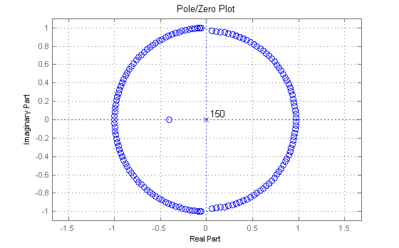

This is a demonstration of the constrained equiripple FIR filter design function FIRCEQRIP.
FIRCEQRIP enables you to design the same (lowpass and highpass) filters as the FIRPM function, but you provide the design specifications differently.
Instead of specifying the passband and stopband edges, and weights for each band, you specify the maximum allowable passband and stopband ripples and one of either the cutoff frequency, the passband edge, or the stopband edge.
Here's how to design two different lowpass filters. In the first example, the normalized frequency value, 0.4, corresponds to the cutoff frequency, while in the second 0.4 corresponds to the stopband edge. In both cases, the maximum passband ripple is 0.05 and the maximum stopband ripple is 0.03.
b1 = firceqrip(30,0.4,[0.05 0.03]);
b2 = firceqrip(30,0.4,[0.05 0.03],'stopedge');
An overlaid plot of both filters illustrates the different designs.
h1 = dfilt.dffir(b1); h2 = dfilt.dffir(b2); hfvt = fvtool(h1,h2, 'MagnitudeDisplay', 'Magnitude'); set(hfvt, 'Color', [1 1 1])
It is straightforward to design a halfband equiripple FIR filter using FIRCEQRIP. Set the cutoff frequency to be 0.5 and use the same maximum allowable ripples for the passband and the stopband.
b = firceqrip(30,0.5,[0.05 0.05]); h = dfilt.dffir(b); set(hfvt, 'Filters', h, 'Analysis', 'impulse');
FIRCEQRIP also allows for an inverse sinc shaped passband which you might use to compensate for the sinc-like response of CIC filters or the staircase reconstructors in digital-to-analog conversion.
The parameters specified in the vector [2 1.5] correspond to the values of c and p respectively in the expression 1/sinc(c*f)^p which defines the shape of the passband.
b = firceqrip(50,0.4,[1e-2 1e-3],'invsinc',[2 1.5]); h = dfilt.dffir(b); set(hfvt, 'Filters', h, 'Analysis', 'magnitude');
For CIC compensation, set the value of p to the number of stages in the CIC filter. For example, you could use the following design to compensate for the sinc shape of a 5-stage CIC filter with a decimation factor of 64 and a differential delay order of 1.
bcomp = firceqrip(20,0.1477,[5.7565e-4 1e-2],'passedge','invsinc',[0.5 5]); % The following code emulates the 5-stage CIC filter R = 64; % Decimation factor M = 1; % Delay order N = 5; % Number of stages Hcic = cascade(dfilt.scalar(1/(R^N)), mfilt.cicdecim(R, M, N));
To verify the compensation, we can cascade the two filters. Since the compensation filter is running at a rate 64 times less than the CIC filter, we need to interpolate the coefficients in order to show both filters on the same scale.
We show the CIC filter (blue), the compensating filter (green) and the resulting filter (red) in the Filter Visualization Tool (FVTool).
Hcomp = dfilt.dffir(bcomp); Hcas = cascade(Hcic,Hcomp); set(hfvt, 'Filters', [Hcic,Hcomp,Hcas], 'MagnitudeDisplay', 'magnitude (db)', ... 'Fs', [64,1,64]); legend(hfvt, 'CIC Filter', 'Compensating Filter', 'Resulting Filter', 'Northeast');
If we zoom into the plot we see how well the overall filter response (red) is doing relative to the compensation (green) and CIC (blue) filters.
We are zooming in on the plot programmatically, since obviously we can't manipulate the mouse interactively, but FVTool allows you to zoom by selecting the zoom icon (the magnifying glass with the + sign in the toolbar) and dragging the mouse on the figure.
hax = get(hfvt, 'CurrentAxes'); axis(hax, [0 1.44 -200 3]); legend(hfvt, 'CIC Filter', 'Compensating Filter', 'Resulting Filter', 'Southwest');

If we zoom into the passband even further we'll see how well the CIC compensation filter (green) compensates for the sinc-like droop caused by the 5-stage CIC filter (blue), which results in the desired overall filter response (red).
axis(hax, [0 .16 -8 2]); legend(hfvt, 'CIC Filter', 'Compensating Filter', 'Resulting Filter', 'Southwest');
FIRCEQRIP also provides an option to have a sloped stopband which is useful in the decimation process to attenuate further the spectral replicas before downsampling.
b = firceqrip(120,0.3,[1e-2 1e-4],'stopedge','slope',60); h = dfilt.dffir(b); set(hfvt, 'Filters', h, 'Legend', 'Off');
In addition to linear phase FIR filters, FIRCEQRIP also designs minimum-phase filters.
b = firceqrip(150,0.5,[1e-2 1e-3],'min'); h = dfilt.dffir(b); set(hfvt, 'Filters', h, 'Analysis', 'polezero');
FIRCEQRIP can be used to design lowpass and highpass filters. Here's a highpass design.
b = firceqrip(80,0.7,[1e-3 1e-3],'passedge','high'); h = dfilt.dffir(b); set(hfvt, 'Filters', h, 'Analysis', 'magnitude');
close(hfvt)